本文章由 @匿名 投稿，由 @Toyo 排版并完善，项目地址：https://github.com/You2php/you2php
昨天有个逗比我邮箱投稿了个 虚拟主机搭建 YouTube镜像网站 的教程，看了下很感兴趣，然后亲自搭建试了试的确能用，所以今天就写个 海外PHP虚拟主机 就能搭建 YouTube私人镜像站 的教程。
投稿人是 You2PHP 项目创建开发者，项目地址主页：https://github.com/You2php/you2php
You2PHP 项目搭建成本很低，甚至说可以完全免费，只需要：一个海外免费的虚拟主机 + 一个免费域名（申请教程） + 一个免费SSL证书
不过我很早就不玩虚拟主机了，所以手里也没有虚拟主机，以下教程只能用 宝塔面板 演示了（虚拟主机使用者请参考教程，当然，无论是免费、付费的虚拟主机都会有网页控制面板的，只是操作和 宝塔面板 略有不同）。
假如你有一个被墙并且无法更换IP的服务器，还不能退款，那么你现在就可以利用上了，搭建 You2PHP 后网站挂一个 免费CDN CloudFlare 就能正常访问了，并且因为CDN缓存的原因还会起到部分加速效果！
注意：因为 You2PHP 目前不支持 ffmpeg ，而 YouTube 1080P以上分辨率的视频都是 视频音频分离的，并且因为 YouTube 经常更换 API 接口，所以 You2PHP 目前最高支持播放 720P 的视频。
不要把下面的教程看的太复杂，实际上只是图片太多，而且我写的更详细，如果你认真按步骤操作一遍，回头来看也没什么难的（万事开头难，不怕你学不会，就怕你不学）。
这个投稿很棒，希望以后有更多的优质投稿文章，投稿文章方法。
前提准备
虽然上面一直写的是 YouTube 镜像站，但是实际上这个程序并不是 反向代理/镜像 YouTube网站，而是通过谷歌官方提供的免费 YouTube API 获取 YouTube 资源，你访问某个视频资源，该程序就会通过API访问对应资源，然后传输给你，也是相当于一个流量中转的作用。
当然因为 PHP流量中转效率，以及服务器性能、网速等等影响，一般情况下效率都是低于 SSR等代理软件 直接访问视频资源，也就是速度相比会慢一些，不过这个程序的优点是低成本（免费无限流量虚拟主机+免费域名+免费SSL证书），对于只打算观看 YouTube 视频的人来说，这个程序还是很好用的。
该项目还支持 下载YouTube视频，不过只支持 720P及以下的分辨率。
You2PHP 原理
You2PHP 读取谷歌服务器上的视频并一块一块的写入到你的虚拟主机/服务器内存中，然后转发给您的浏览器，你的虚拟主机/服务器起到了一个中转跳板的作，巧妙的避开了GFW的拦截，因此可以支持 大于虚拟主机空间硬盘大小 的视频。
要想搭建 You2PHP 程序，需要准备以下内容：
- 一个 海外PHP虚拟主机（或者一个 海外VPS，硬盘没要求，因为需要运行PHP环境，建议内存 256MB以上）
需要 PHP版本>5.3、支持 CURL PHP组件（大部分免费虚拟主机都支持），无限流量且免费的虚拟主机很多。
- 一个 域名（免费域名申请教程）
域名的作用不仅仅是用来访问网站，而是需要申请 SSL证书 配置 HTTPS 加密网站，否则可能几天就被墙了。
- 一个 YouTube API 密匙（下面会教你如何免费申请）
免费虚拟主机哪里找？谷歌搜索 free host php 即可发现一大堆。。。
申请 YouTube API 密匙
第一步我们就是要申请 YouTube API 密匙。
点击展开 查看更多
登陆/注册
首先你需要一个 Google 账号才行，如果你没有 Google 账号，请注册：https://accounts.google.com/SignUp
注册后或者你已有账号，那么请访问 API 管理页面：https://console.developers.google.com/
进入 API 管理页面后，如果你是第一次进入，那么可能会提示下图内容，全部选择 是 ，并点击 接受 即可。
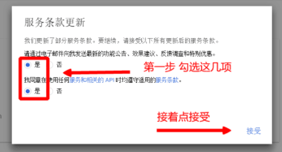
新建 API 项目
在 API 管理页面中，我们点击顶部的 [选择项目] 选项。
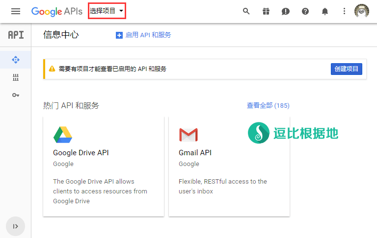
会弹出项目选择列表，当然默认我们没有项目，所以我们需要新建项目，点击右上角的 [+] 加号。
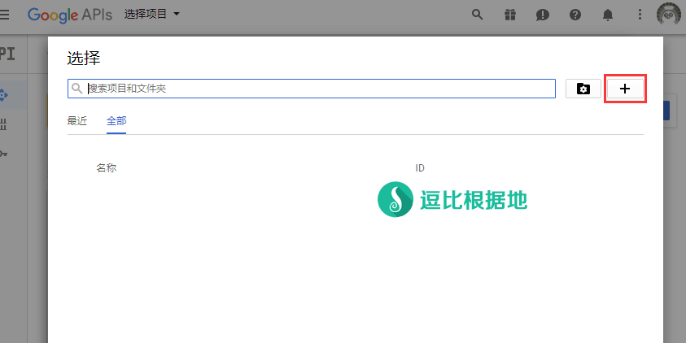
点击加号后，我们就会进入新建项目页面，如下图所示填写项目名称(随意，项目ID不用管)，并点击 创建 按钮即可。
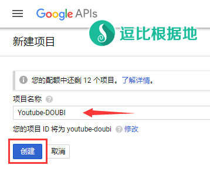
创建一个新项目后，我们需要等待10-30秒时间（创建时间），然后返回 API 管理页面，再次点击顶部的 [选择项目] 选项，在弹出的项目列表中选择刚才新建的项目（点击项目名字）。
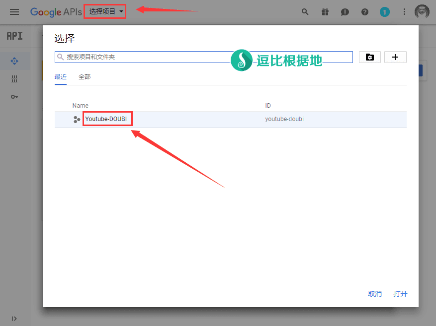
启用 API 和服务
新建项目后，我们就需要启用API了。顶部的 [选择项目] 文字变成了我们刚才新建的项目名称，接着我们点击 [+ 启用 API 和服务] 选项。
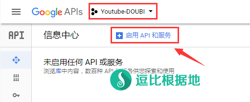
在新打开的 API 页面中的左侧，找到 YouTube 选项并点击。
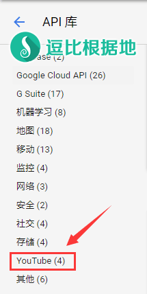
点击后可以看到如下图所示，接着我们选择点击 YouTube Data API v3 这个API。
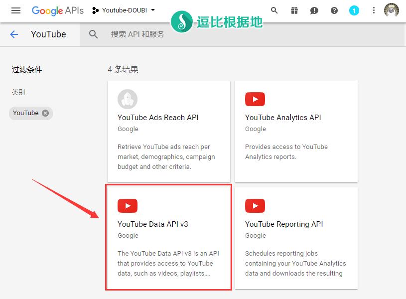
点击后我们就会看到 YouTube Data API v3 的详细介绍，直接点击 启用 按钮即可。
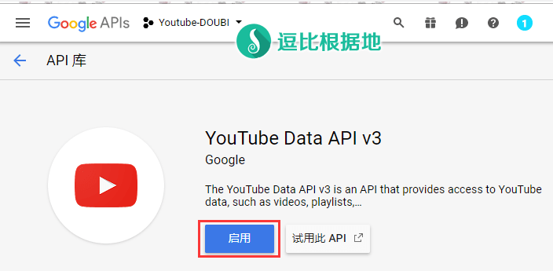
创建 API 凭据(密匙)
当启用 API 后，还没完，我们还需要创建一个凭据（就是API密匙）才行。点击下图所示的 创建凭据 按钮。
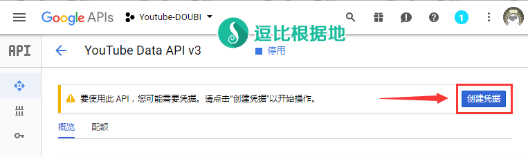
点击按钮后，会显示如下图所示内容，请务必根据下图来填写！
- 您使用的是哪个 API？
YouTube Data API v3
- 您从哪里调用 API？
网页服务器（例如 node.js、Tomcat）
- 您要访问那些数据？
公开数据
填写正确后，点击 我需要哪些凭据？ 按钮。
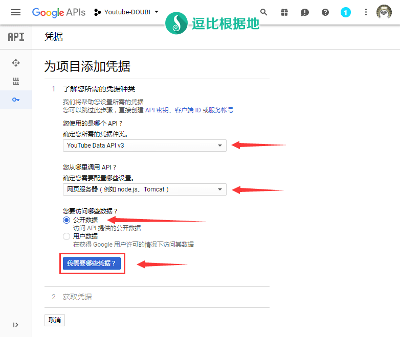
点击按钮后，即可看到你的凭据（API 密匙）了，复制你的 API密匙 好好保存，不要暴露给其他人，然后点击 完成 按钮即可。
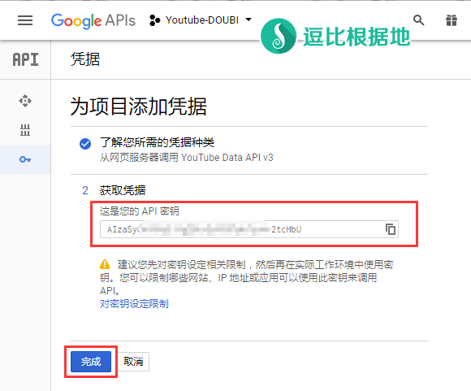
点击按钮后，我们就会回到 API 管理页面，如下图所示，如果你的 API 密匙 丢失、暴露，可以去这里删除旧 API 密匙，然后重复上面的步骤新建凭据（API 密匙）。
到这里，我们的 YouTube API 密匙就申请完毕了，如果没出问题，那么以后就能一直使用。
注意：虽然没看到写，但是估计 YouTube API 会限制你的访问频率，所以如果你要搭建多个 YouTube镜像站，建议多申请几个分开使用。
另外单个 YouTube镜像站不建议太多人使用：
一是 可能会触发 API访问频率限制；
二是 You2PHP 程序处理能力有限；
三是 流量越大被墙发现几率越高（一两个人使用可能一年半载都没事）。
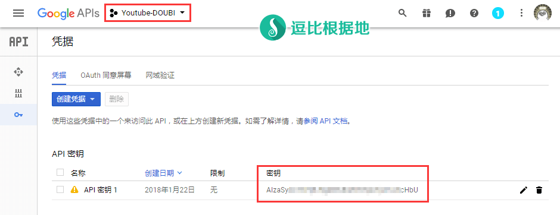
虚拟主机 搭建 You2PHP
虽然标题写的是虚拟主机搭建 You2PHP，但是因为我很早就不玩虚拟主机了，所以手里也没有虚拟主机，以下教程只能用 宝塔面板 演示了（虚拟主机使用者请参考教程，当然，无论是免费、付费的虚拟主机都会有网页控制面板的，只是操作和 宝塔面板 略有不同）。
宝塔面板搭建教程请参考该教程前半部分（反向代理步骤不需要看）：https://doub.io/wlzy-39/
注意：如果你不打算搭建其他网站，那么可以只安装 Nginx、PHP 组件，其他组件均不需要
点击展开 查看更多
下载 You2PHP
首先我们需要下载 You2PHP 文件到本地，简单修改一下。
You2PHP 下载地址：https://github.com/You2php/you2php/archive/master.zip
下载后我们会得到一个 you2php-master.zip 压缩包，可以看到目前的压缩包目录结构是这样的，我们需要改一改（虽然服务器上面也能改，但本地修改更方便）。
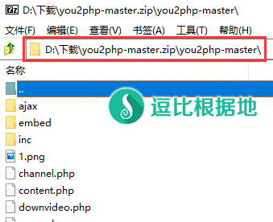
先解压这个压缩包，得到一个 you2php-master 文件夹，然后我们进入该文件夹。接着选中文件夹内所有文件并新建压缩包为 you2php-master.zip 。
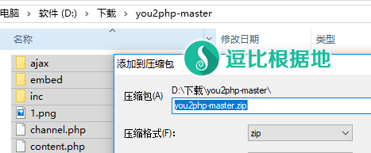
压缩后，我们打开刚刚新建的压缩文件 you2php-master.zip ，可以看到目录结构是这样的。
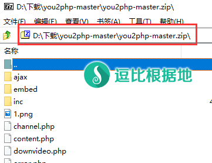
新建站点
如果你用的是免费的虚拟主机，那么是没有新建站点步骤的，只有绑定域名步骤（不过往往申请免费虚拟主机的时候就让你填写要绑定的域名了）。
进入宝塔面板，点击右侧的 网站 - 添加站点。
然后如下图所示，我们新添加一个站点，填写网站域名（可绑定多个域名，一行一个）、数据库 和 FTP 都不需要创建，其他选项都默认即可，点击 提交 按钮。
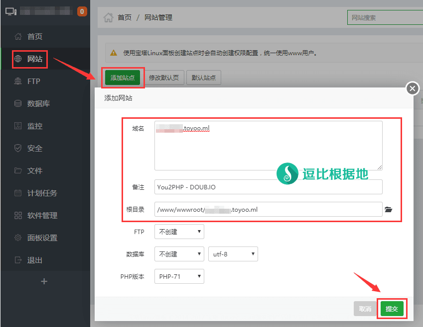
配置站点 SSL
目前主流的 面板（免费/付费虚拟主机） 都有配置SSL证书功能，较新版本的则也支持 Let's Encrype SSL免费证书申请。
新建站点后，我们在上传网页文件前还需要配置一下网站，点击刚才新建站点的 设置 选项。
然后选择弹出的站点修改窗口中右侧的 SSL ，点击 Let's Encrypt 选项，填写你的邮箱（必须真实邮箱），然后勾选要 申请SSL证书 的域名，然后点击 申请 按钮。
注意：要申请 Let's Encrypt 免费SSL证书，需要先把你的域名做好DNS解析（域名解析IP到该服务器IP），做完解析后（域名不能挂CDN），可能需要 等待3-30分钟 来使全球DNS生效，因为申请这个免费SSL证书，需要验证域名解析的服务器。
如果提示 域名解析有问题，请检查你的域名解析是否有误，如果无误，那么说明 Let's Encrypt 的验证服务器还未更新DNS解析，请等待直到 验证成功申请SSL完成后，再继续下面的步骤，否则使用 HTTP 如果服务器/域名被墙后果自负。
当然，你也可以自己去其他渠道申请SSL证书，在 其他证书 选项里就能填写自定义证书。
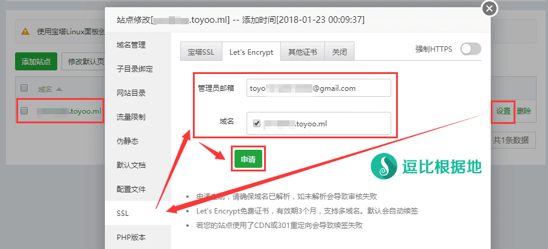
如果不出意外，申请成功后会自动配置 HTTPS 和 SSL 证书，然后务必勾选右上角的 强制HTTPS 选项。
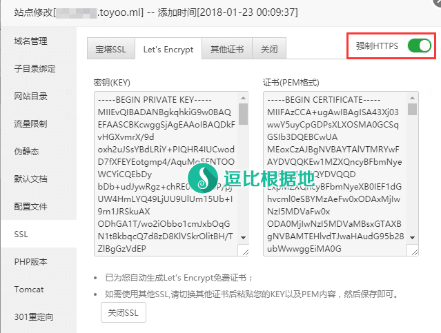
配置站点 访问加密
这个步骤，虽然不是必须的，但是我建议必做，一是可以防止别人访问，二是降低被墙几率。
在站点修改 窗口中右侧 网站目录，开启 密码访问 功能。然后依次填写 账号、密码、重复密码 后，点击 保存 按钮。
这样在访问 该网站的时候，必须输入账号和密码，登陆成功后会写入浏览器 Cookie，Cookie到期前下次访问都不需要再次输入。
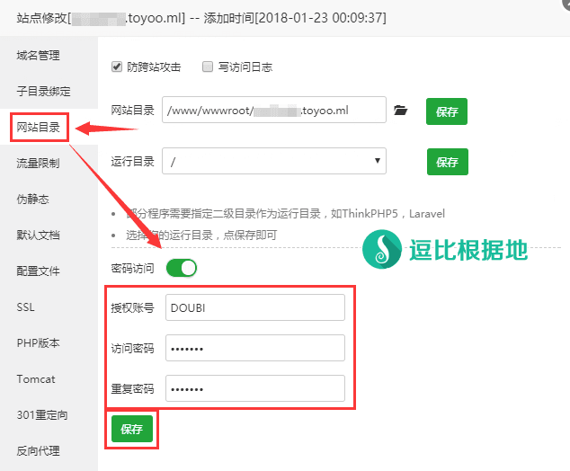
上传 You2PHP 网页文件
接下来，我们需要点击宝塔面板左侧 文件，然后进入你刚才新建站点的目录，点击 上传 按钮，在弹出的上传文件窗口中，点击 添加文件 按钮，然后选择前面打包好的 you2php-master.zip 文件，并点击 开始上传 按钮，等待上传成功后，就可以关闭上传文件窗口了。
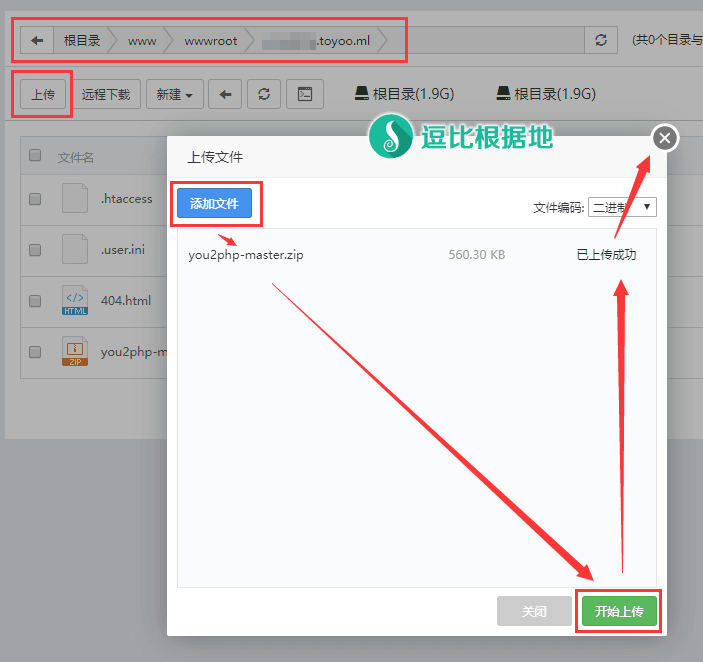
上传成功后，我们就需要选中 you2php-master.zip 文件并解压，点击 解压 选项后，不需要修改 解压文件 窗口内的任何内容，直接点击 解压 按钮即可。
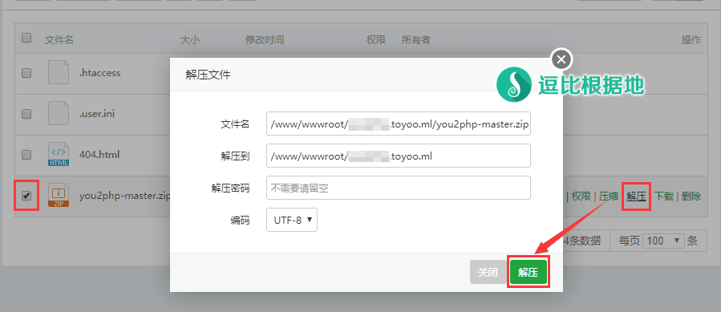
解压后效果如下，然后记得把 you2php-master.zip 文件和宝塔面板自动创建的默认首页 index.html 文件（别删错）删掉。
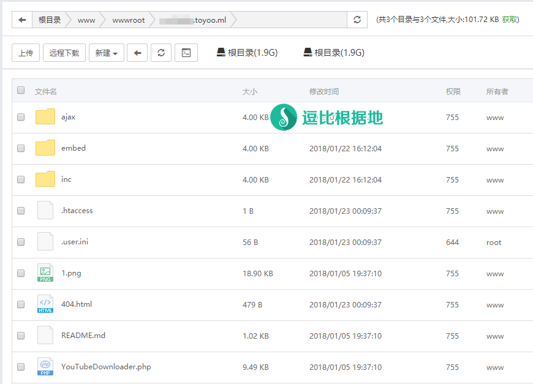
安装 You2PHP
当上面的步骤都操作完后，接下来只剩下最后一个环节了，那就是安装 You2PHP（其实就是设定配置内容）。
点击展开 查看更多
假设你上面绑定的域名为 abc.toyoo.pw，那么请访问 https://abc.toyoo.pw/install.php 地址，就会进入安装页面。
如果你配置了网站加密，那么就会提示身份验证信息，需要填写正确的用户名和密码后才能进入。
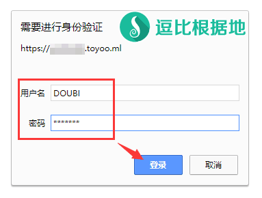
You2PHP 使用许可协议
主要是这三条，请务必遵守。
- 不要 在中国大陆网络商家提供的主机或服务器上安装You2PHP。如腾讯云 阿里云 !!!
- 不要 给您的服务器或主机绑定已经备案的域名，更不要绑定CN域名 !!!
- 不要 轻易在网络上传播您的You2PHP站点URL，只能分享给您信任的人使用，大规模传播容易造成域名被墙或其他严重后果！强烈建议您按照这个最简单方法给你的站点上锁，防止其他人访问。
如果你同意该协议，那么请勾选 我已经阅读并同意该协议 ，然后点击 继续 按钮。
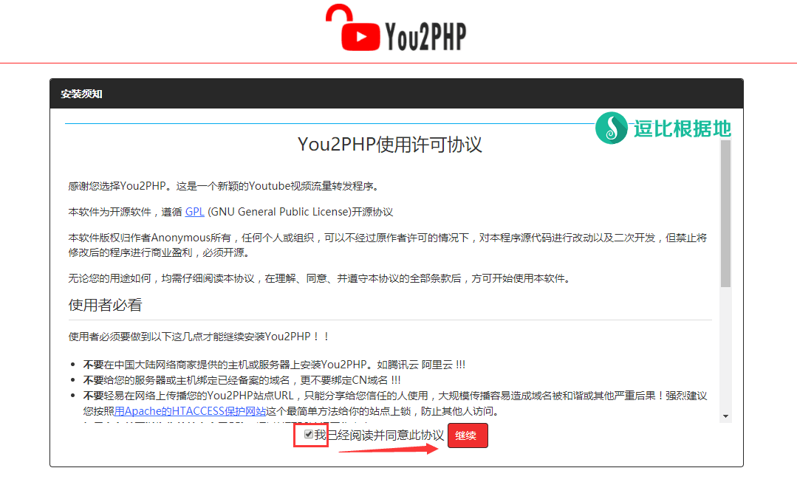
检测服务器是否支持安装 You2PHP
接下来 You2PHP 会开始检测当前环节是否支持安装运行 You2PHP 。
如果基础环境支持提示不支持，那么就无需继续下面步骤了！
另外，请确保最下方的 YouTube 视频播放正常，如果播放有问题，可能会无法使用。
如果都没有问题，那么请点击 继续 按钮。
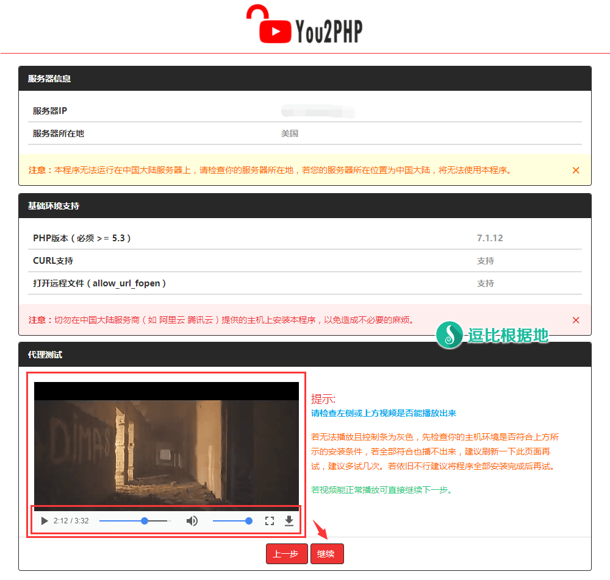
配置 You2PHP 参数
接下来就是配置 You2PHP 参数了。
Youtube API V3 KEY：填写最前面申请的 YouTube API 密匙。
国家代码：填写你要观看的 YouTube 视频区域国家代码，所有国家代码看这里（一般都是填写：香港=HK、台湾=TW、日本=JP、美国=US）。
网站名字：打开网站后，浏览器标签中显示的名字（请不要包含单引号 ' ）。
站点名字：打开网站后，网站页面左上角显示的名字（请不要包含单引号 ' ）。
加/解密密匙：一个无序的字符串，乱填也行，建议去这个网站随便找一个随机字符串（注意：请不要包含单引号 ' ）。
你的邮箱：请务必认真填写真实有效的 Email地址！
填写无误后，就点击 继续 按钮。
当然如果你填写有误，或者需要修改，那么可以去 /你的虚拟主机文件夹/config.php 中，修改上面的配置内容。
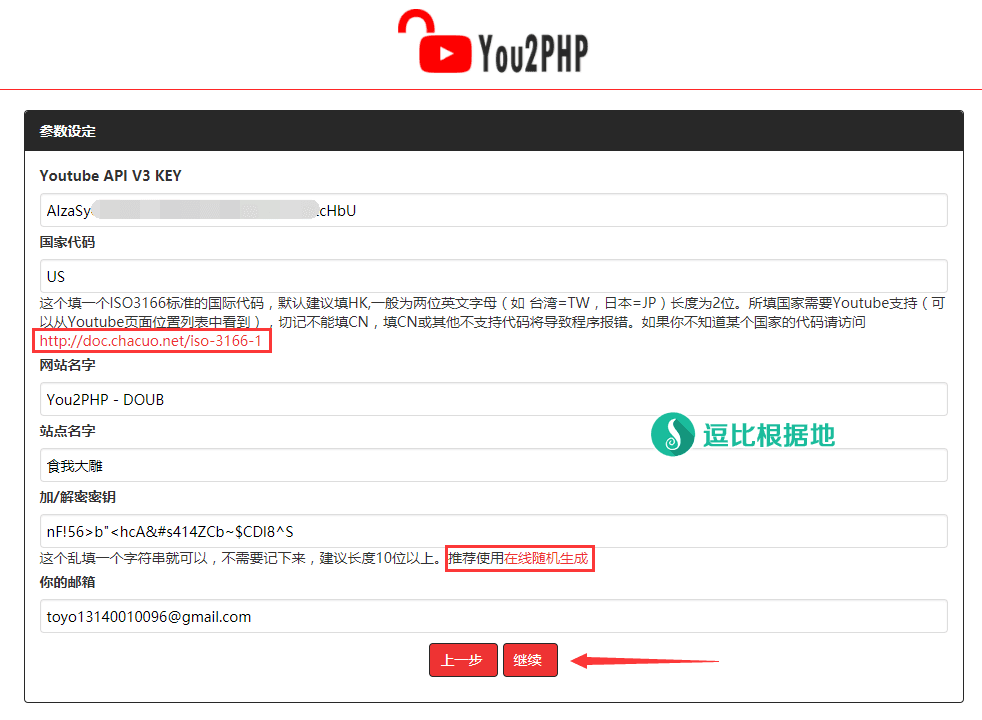
You2PHP 安装成功
接下来，You2PHP 程序就会开始安装，可能需要 5-60秒 的时间，安装完毕后，不出意外会提示 安装成功，点击 进入首页 按钮。
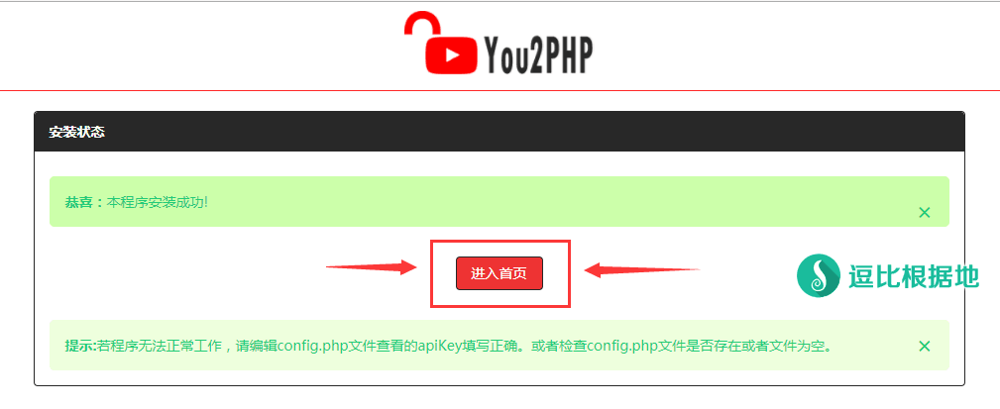
口当口当口当口当！
然后我们就看到属于我们私人的 YouTube镜像站了！随便点击几个视频看看，是否能正常播放。如果都播放正常，那么就算完全安装完毕了！
其他功能介绍
修改配置参数
如果你想要修改一些安装时候填写的配置参数，那么可以找到 /你的虚拟主机文件夹/config.php 文件，这里面写了该程序的所有配置参数。
更多玩法
在评论区里看到有人把 You2PHP 搭建的网站挂上了免费CDN CloudFlare ，挂上CDN后，就会自动缓存图片和视频，并且还不用担心源服务器被墙（即使被墙发现那也只会封锁 CDN 的IP），并且因为图片和视频被缓存的原因，可以使其负载能力更强（比如你的性能配置最多两个人同时观看流畅，那么现在可以三四个人了）。
当然，即使是不用担心源IP被墙，但是也还是建议你加上密码，减少被墙发现的几率。
下载 YouTube 视频
点击展开 查看更多
You2PHP 除了能看 YouTube 视频外，还能下载 YouTube 视频，点击首页左侧的 视频下载 选项。
复制你要下载的 YouTube 视频链接（注意是 YouTube 视频链接，而不是你这个镜像站的视频链接！），粘贴到输入框内，并点击 下载 按钮，就会看到如下图所示。
因为 You2PHP 目前不支持 ffmpeg ，而 YouTube 1080P以上分辨率的视频都是 视频音频分离的，要想下载 1080P以上分辨率的视频，必须使用 ffmpeg 来合并视频音频，所以 You2PHP 最高支持到 720P 的视频。
胜聊于无吧，对于不需要高分辨率的人来说，这个功能还是不错的（当然下载YouTube视频的速度取决于你 虚拟主机/VPS 的速度）。
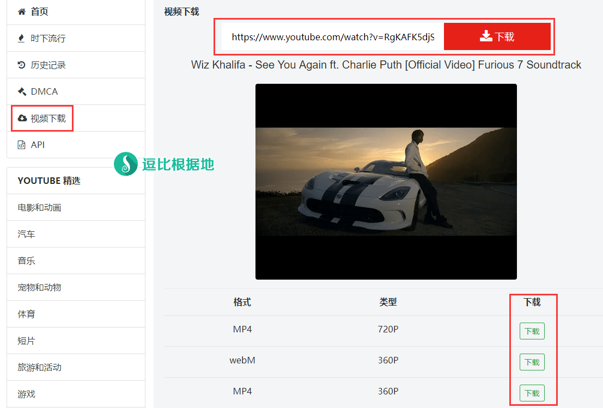
安装后打开网站报错 500：Parse error: syntax error, unexpected '56' (T_LNUMBER), expecting ',' or ')' in /xxxx/你的虚拟主机文件夹/config.php on line X
出现该错误，说明你在 配置 You2PHP 参数 步骤时，某个配置中含有单引号 ' 。
请根据提示找到你虚拟主机目录下的 config.php 文件，打开后，根据最后提示的 on line X (X指的是行数，数字)，来找到对应行数，删除多余的 单引号 ' 。
因为每个配置参数都是由单引号包括起来的，所以多了个单引号才会导致这个错误。
该错误在昨天 You2PHP 作者投稿后，我就发现了，然后昨天完整联系作者修复了这个问题（我和作者测试都没问题了），但是不保证不会再出现。
如果有人出现了这种情况，请务必添加向作者反馈：Github - Issues
You2PHP 项目地址：https://github.com/You2php/you2php
You2PHP 项目主页：https://you2php.github.io/
You2PHP 官方教程：https://you2php.github.io/doc/
这个投稿很棒，希望以后有更多的优质投稿文章，投稿文章方法。
应该没什么遗漏了，如果有什么问题，请联系我。
转载请超链接注明：逗比根据地 » 只需 海外PHP虚拟主机 完全免费搭建 YouTube私人镜像站，不翻墙看油管！
责任声明：本站一切资源仅用作交流学习，请勿用作商业或违法行为！如造成任何后果，本站概不负责！


无论是SSR还是其他代理软件的全局模式，都是指的是 系统代理设置 里的全局代理服务器配置，只有能读取系统代理设置的软件才会有效，比如浏览器。